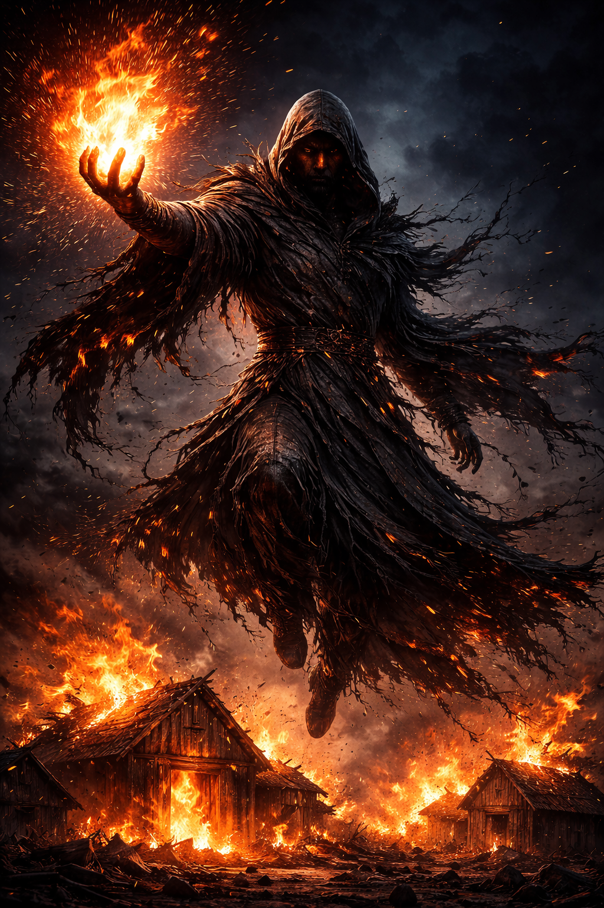

На данном сайте содержится информацию о произведении "От предвечной Тьмы к лунному Свету". Среди этой информации имеется большое количество сюжетных спойлеров.
Шалхут
«Шалхут говорил, что голод объединяет».
— Йельшас, описывая философию Шалхута.
Шалхут — один из богов павшего «серого мира», из которого прибыл Йельшас. Он вошёл в историю своего мира как сущность, пытавшаяся искоренить насилие и жадность среди смертных через лишения и жесткий контроль. Несмотря на благие намерения, его методы привели к деградации общества и стали одной из причин гибели цивилизации гуманоидов в его мире.

×
Шалхут
Вид:Бог
Пол:Мужской (антропоморфный)
Статус:Неизвестен (вероятно, впал в вечный сон)
Род занятий:Бог-хранитель, «учитель мудрости»
Первое появление:Глава 25
Внешность
Шалхут предстаёт в виде высокой фигуры, облачённой в тёмные, рваные одежды, которые колышутся, словно живые. Края его плаща обуглены, как будто он провёл вечность в пламени пожаров. Лицо бога скрыто глубоким капюшоном, из темноты которого лишь иногда вырываются отсветы пламени.
Философия и методы
Шалхут считал, что основой мира и взаимопомощи является общее страдание. Его девиз заключался в том, что «голод объединяет». Он стремился научить людей не жадничать и делиться ресурсами, но делал это путём принудительной нищеты.
Основные действия:
Искусственные пожары: Чтобы заставить поселения сотрудничать, Шалхут сжигал их амбары с зерном с помощью огненных шаров. В условиях дефицита пищи общины были вынуждены делиться остатками запасов друг с другом, что Шалхут называл «мудростью».
Запрет на защиту: Шалхут категорически запрещал смертным создавать оружие. В одном из воспоминаний он запретил кузнецу ковать меч для крестьянина, желавшего защитить свою семью, и приказал вместо этого ковать мотыги.
Монополия на насилие: Бог утверждал, что смертные не имеют права карать друг друга: «Те, кто крадёт у работающих, будут наказаны. Не твоими руками. Моими».
Последствия деятельности
Хотя Шалхуту удалось предотвратить открытые войны, его правление обернулось катастрофой:
Лишение права на защиту: Люди стали абсолютно беззащитны перед любой угрозой, так как бог отобрал у них возможность сопротивляться силой.
Экономический крах: Общество погрузилось в беспросветную нищету. Надежда стала «роскошью, которую нельзя себе позволить».
Демографическая смерть: Осознав, что их дети обречены на вечный голод, гуманоиды перестали рожать. Поселения пустели, улицы городов вымирали, а детские площадки превращались в ржавые руины.
Как резюмировал Йельшас: «Шалхут хотел защитить народ от войны, но не смог защитить от нищеты».
Интересные факты
Игорь Меркулов при просмотре воспоминаний о Шалхуте отметил пугающее сходство его методов с ситуацией в современном человеческом обществе, где «гражданину выгоднее не иметь ничего» и «не рожать детей», чтобы выжить.
В отличие от Авакутха, который подавлял волю напрямую, Шалхут манипулировал внешними обстоятельствами (голодом), чтобы направить поведение людей в нужное ему русло.
Его магия была сосредоточена на разрушении (огонь), которое он парадоксально использовал для создания «мира».
Этот сайт делает вид, что использует cookie, но на самом деле просто показывает вам ебучее всплывающее окно